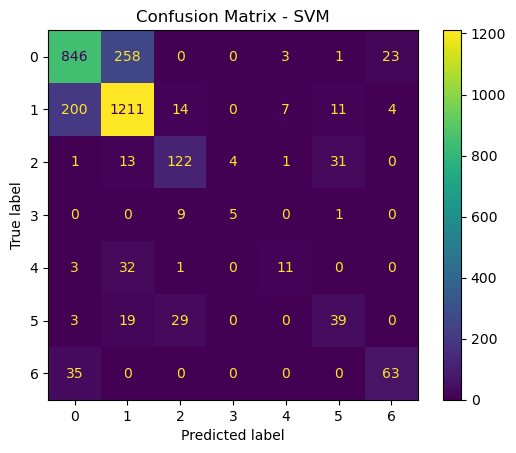
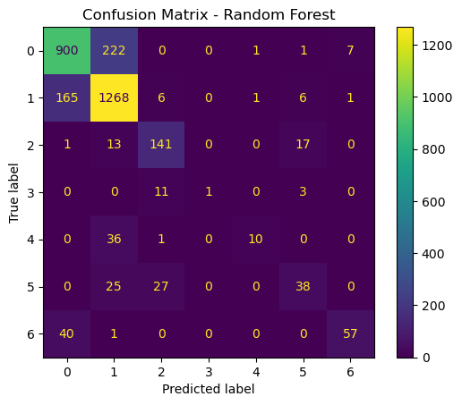

Predicting Forest Cover Type using Support Vector Machines and Random Forest Models
Practicing Machine Learning techniques in Python
Python
Machine Learning
Geospatial
Author
Bailey Jørgensen
Published
February 6, 2026
A picture of trees and a mountain in Roosevelt National Forest from the Forest Service website.
Introduction
The code below was a lab I completed as part of my Masters of Environmental Science degree at the University of California in Santa Barbara. I have cleaned up the lab a bit to showcase it here, as I believe it is a good example of some of the machine learning skills I practiced while participating in this program. This was part of Matteo Robins’s EDS 232 course: Machine Learning for Environmental Data Science.
In this lab, I explored the application of Support Vector Machines (SVMs) and Random Forests (RFs) for multi-class classification using cartographic variables. Specifically, I predicted forest cover type based on a variety of environmental features such as elevation, soil type, and land aspect.
From the official class lab: “Understanding forest cover classification is crucial for natural resource management. Land managers and conservationists rely on accurate predictions of vegetation types to make informed decisions about wildlife habitats, fire management, and sustainable forestry practices. However, direct field assessments of forest cover can be costly and time-consuming, making predictive models a valuable tool for estimating cover types in large or inaccessible regions.”
Dataset Information
The data used for this lab comes from the UC Irvine Machine Learning Respository. This data is not from remote sensing, but rather from cartographic variables. To quote the data webpage: “The actual forest cover type for a given observation (30 x 30 meter cell) was determined from US Forest Service (USFS) Region 2 Resource Information System (RIS) data. Independent variables were derived from data originally obtained from US Geological Survey (USGS) and USFS data. Data is in raw form (not scaled) and contains binary (0 or 1) columns of data for qualitative independent variables (wilderness areas and soil types).
“This study area includes four wilderness areas located in the Roosevelt National Forest of northern Colorado. These areas represent forests with minimal human-caused disturbances, so that existing forest cover types are more a result of ecological processes rather than forest management practices.
Some background information for these four wilderness areas: Neota (area 2) probably has the highest mean elevational value of the 4 wilderness areas. Rawah (area 1) and Comanche Peak (area 3) would have a lower mean elevational value, while Cache la Poudre (area 4) would have the lowest mean elevational value.
As for primary major tree species in these areas, Neota would have spruce/fir (type 1), while Rawah and Comanche Peak would probably have lodgepole pine (type 2) as their primary species, followed by spruce/fir and aspen (type 5). Cache la Poudre would tend to have Ponderosa pine (type 3), Douglas-fir (type 6), and cottonwood/willow (type 4).
The Rawah and Comanche Peak areas would tend to be more typical of the overall dataset than either the Neota or Cache la Poudre, due to their assortment of tree species and range of predictive variable values (elevation, etc.) Cache la Poudre would probably be more unique than the others, due to its relatively low elevation range and species composition.”
Several machine learning papers have been published using this dataset. This lab excercise is simply a way to play with this important data, and does not attempt to glean any novel new information from it. I will walk you through a step by step process of the SMV and RF techniques I practiced on this data.
Step 0: Load Libraries and Data
Code
import pandas as pdimport timefrom sklearn.model_selection import train_test_split, StratifiedKFold, GridSearchCVfrom sklearn.preprocessing import StandardScalerfrom sklearn.svm import SVCfrom sklearn.ensemble import RandomForestClassifierfrom sklearn.metrics import accuracy_score, confusion_matrix, ConfusionMatrixDisplayimport matplotlib.pyplot as pltimport seaborn as sns# Load the datasetdf = pd.read_csv("/courses/EDS232/Data/covtype_sample.csv")
Step 1: Data Preprocessing
Before building our classification models, I need to prepare the dataset by separating the features target variable (Cover_Type) and splitting the data into training and test sets.
I know that SVMs are sensitive to feature scale. Here, I use describe() to summarize the dataset.
Code
df.describe()
Elevation
Aspect
Slope
Horizontal_Distance_To_Hydrology
Horizontal_Distance_To_Roadways
Hillshade_9am
Hillshade_Noon
Hillshade_3pm
Horizontal_Distance_To_Fire_Points
Wilderness_Area_Rawah
...
Soil_Type_32
Soil_Type_33
Soil_Type_34
Soil_Type_35
Soil_Type_36
Soil_Type_37
Soil_Type_38
Soil_Type_39
Soil_Type_40
Cover_Type
count
10000.000000
10000.000000
10000.000000
10000.000000
10000.000000
10000.000000
10000.00000
10000.000000
10000.000000
10000.000000
...
10000.000000
10000.000000
10000.00000
10000.00000
10000.000000
10000.000000
10000.000000
10000.000000
10000.000000
10000.000000
mean
2955.599500
154.450000
14.114700
268.097600
45.755300
2319.360300
212.19660
223.113500
142.243800
1960.040200
...
0.091200
0.082900
0.00250
0.00250
0.000200
0.000500
0.026800
0.024500
0.013600
2.036600
std
281.786673
111.851861
7.499705
211.899673
58.034207
1548.558651
26.98846
19.871067
37.799752
1320.535941
...
0.287908
0.275745
0.04994
0.04994
0.014141
0.022356
0.161507
0.154603
0.115829
1.383782
min
1860.000000
0.000000
0.000000
0.000000
-164.000000
0.000000
68.00000
71.000000
0.000000
0.000000
...
0.000000
0.000000
0.00000
0.00000
0.000000
0.000000
0.000000
0.000000
0.000000
1.000000
25%
2804.750000
58.000000
9.000000
95.000000
7.000000
1091.750000
198.00000
213.000000
119.000000
1006.000000
...
0.000000
0.000000
0.00000
0.00000
0.000000
0.000000
0.000000
0.000000
0.000000
1.000000
50%
2995.000000
126.000000
13.000000
218.000000
29.000000
1977.000000
218.00000
226.000000
142.000000
1699.000000
...
0.000000
0.000000
0.00000
0.00000
0.000000
0.000000
0.000000
0.000000
0.000000
2.000000
75%
3159.000000
258.000000
18.000000
384.000000
68.000000
3279.000000
231.00000
237.000000
168.000000
2524.000000
...
0.000000
0.000000
0.00000
0.00000
0.000000
0.000000
0.000000
0.000000
0.000000
2.000000
max
3846.000000
359.000000
65.000000
1243.000000
427.000000
7078.000000
254.00000
254.000000
246.000000
7111.000000
...
1.000000
1.000000
1.00000
1.00000
1.000000
1.000000
1.000000
1.000000
1.000000
7.000000
8 rows × 55 columns
Based on what I see above, I know that some of these features have different scales. For example, the soil type columns are really small, while the distance and area columns contain a wide range of large numbers. So, I’m gonna scale it!
Code
# Separate features and target variableX = df.drop(columns=["Cover_Type"])y = df["Cover_Type"]# Split the datasetX_train, X_test, y_train, y_test = train_test_split(X, y, test_size=0.3, random_state=42)# Initialize the scalerscaler = StandardScaler()# Fit and transform the training dataX_train_scaled = scaler.fit_transform(X_train)# Transform the test dataX_test_scaled = scaler.transform(X_test)
Step 2: Hyperparameter Tuning for SVM
To optimize this SVM model, I need to search for the best hyperparameters that maximize classification accuracy. Since SVM performance depends heavily on C, kernel, and gamma, I will use GridSearchCV() to systematically test different combinations. I then initialize a cross validation object with 5 folds using StratifiedKFold. A resource from class: check out how StratifiedKFold differs from Kfoldhere.
Then, I set up a grid to test different values of: - C (regularization strength): how strictly the model fits the training data - Candidate parameter values: (0.1, 1, 10, 100) - kernel (decision boundary shape): compares linear and radial basis function shapes - Candidate parameter values: (linear, rbf) - gamma (influence of training observations): influence of individual points on decision boundary - Candidate parameter values: (scale, auto)
As models and datasets become more complex, consideration of computation time becomes more important. Here, I use time.time() to measure the time required to fit the grid object.
Code
# Initialize a cross validataion object with 5 foldscv = StratifiedKFold(n_splits=5)# Set up the parameter grid, needed for the GridSearchCVparam_grid = {'C': [0.1, 1, 10, 100],'kernel': ['linear', 'rbf'],'gamma': ['scale', 'auto']}# Support Vector Machines! SVM, though the function is spelled SVC() for some reasonsvm = SVC()# Do the grid search!grid_search = GridSearchCV(estimator=svm, param_grid=param_grid, cv=cv, n_jobs=-1, verbose=0)# Measure the time it takes to fit the grid objectstart_time = time.time()grid_search.fit(X_train_scaled, y_train)end_time = time.time()# Print the best parametersprint("Best Parameters:", grid_search.best_params_)# Print the time required to fit the grid objectprint("Time taken to fit the grid object: {:.2f} seconds".format(end_time - start_time))
Best Parameters: {'C': 100, 'gamma': 'auto', 'kernel': 'rbf'}
Time taken to fit the grid object: 498.91 seconds
Step 3: Build a fit a Random Forest for comparison
Let’s compare our SVM to a Random Forest classifier. Here, I create a grid for cross-validation with three hyperparameters to tune, along with three sensible values for each one.
Code
# OK, lets do a random forest to make comparisonsparam_grid_rf = {'n_estimators': [100, 200, 300],'max_depth': [10, 20, 30],'min_samples_split': [2, 5, 10]}# Call in the RF modelrf = RandomForestClassifier(random_state=42)# Do the grid search, but on the rfgrid_search_rf = GridSearchCV(estimator=rf, param_grid=param_grid_rf, cv=cv, n_jobs=-1, verbose=0)# Do the same fancy time trickstart_time_rf = time.time()grid_search_rf.fit(X_train_scaled, y_train)end_time_rf = time.time()# Print the best parametersprint("Best Parameters for Random Forest:", grid_search_rf.best_params_)# Print the time required to fit the grid objectprint("Time taken to fit the Random Forest grid object: {:.2f} seconds".format(end_time_rf - start_time_rf))
Best Parameters for Random Forest: {'max_depth': 30, 'min_samples_split': 2, 'n_estimators': 200}
Time taken to fit the Random Forest grid object: 14.68 seconds
Step 4: Model Predictions and Evaluation
Now that I have trained and optimized both a SVM and RF model, I evaluate their performances on the test set to prepare for model comparison. The steps I take are: - Use the best models from GridSearchCV() to make predictions on the test set - Generate a confusion matrix for each model to visualize classification performance
Code
# Best SVM model from GridSearchCVbest_svm = grid_search.best_estimator_# Best Random Forest model from GridSearchCVbest_rf = grid_search_rf.best_estimator_# Make predictions on the test sety_pred_svm = best_svm.predict(X_test_scaled)y_pred_rf = best_rf.predict(X_test_scaled)# Confusion matrix for SVMcm_svm = confusion_matrix(y_test, y_pred_svm)disp_svm = ConfusionMatrixDisplay(confusion_matrix=cm_svm)disp_svm.plot()plt.title("Confusion Matrix - SVM")plt.show()# Confusion matrix for Random Forestcm_rf = confusion_matrix(y_test, y_pred_rf)disp_rf = ConfusionMatrixDisplay(confusion_matrix=cm_rf)disp_rf.plot()plt.title("Confusion Matrix - Random Forest")plt.show()


Step 5: Gather and display additional performance metrics
Now, I want to display the accuracy score and training time required for each model to so I can compare the models.
Code
# Calculate accuracy scoresaccuracy_svm = accuracy_score(y_test, y_pred_svm)accuracy_rf = accuracy_score(y_test, y_pred_rf)# Print accuracy scores and training timesprint("Accuracy for SVM: {:.2f}".format(accuracy_svm *100))print("Time taken to fit the SVM grid object: {:.2f} seconds".format(end_time - start_time))print("Accuracy for Random Forest: {:.2f}".format(accuracy_rf *100))print("Time taken to fit the Random Forest grid object: {:.2f} seconds".format(end_time_rf - start_time_rf))
Accuracy for SVM: 76.57
Time taken to fit the SVM grid object: 498.91 seconds
Accuracy for Random Forest: 80.50
Time taken to fit the Random Forest grid object: 14.68 seconds
Step 6: Compare the models
Now that we have trained, optimized, and evaluated both SVM and RF models, we will compare them based on overall accuracy, training time, and types of errors made.
The accurace for SVM is a little bit lower, at around 76.57, whereas the accuracy of RF was 80.50. The time it took to run the SVM was also significantly longer, at 498.91 seconds, as opposed to 14.68 seconds. So in general, I think that in this case, the random forest model is the better choice. In a scenario where computation time was not an issue, an argument could be made for SVM. But if simplicity is the name of the game, than Random Forests is the way to go.